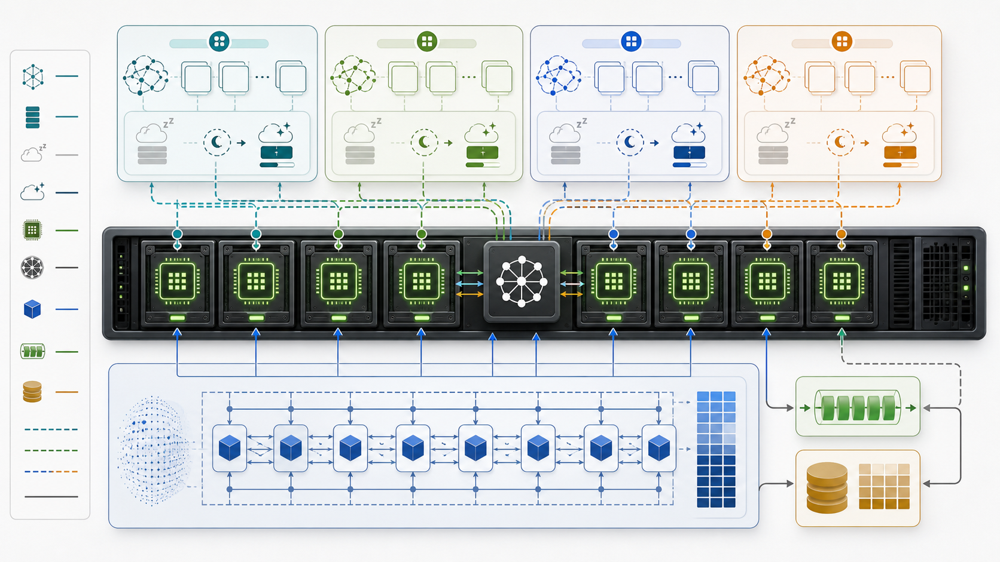
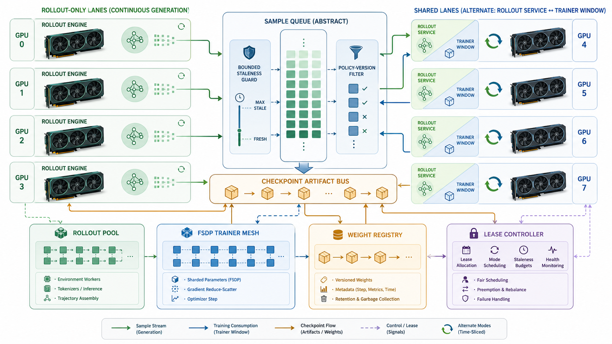
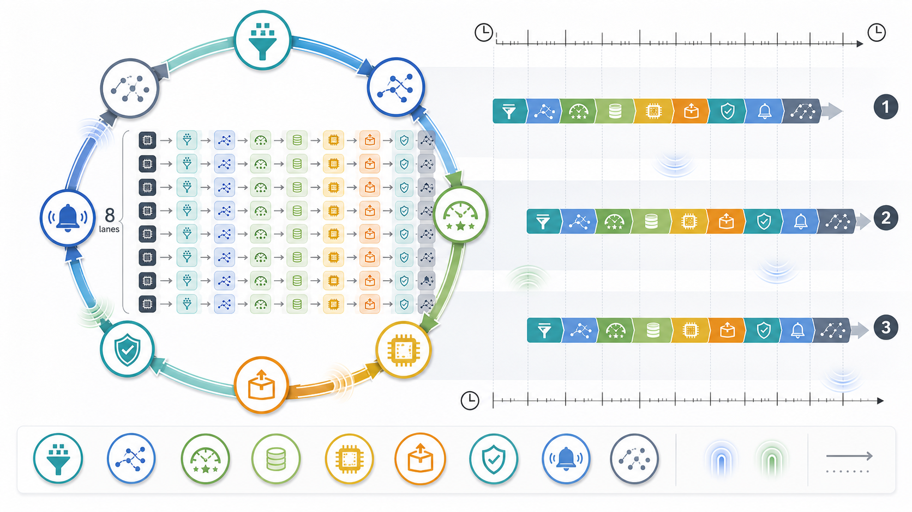

nano-rl runtime architecture
这页把 2026-05-17 的一次真实 collocated 训练 run 拆成时间线，并把同一套 Ray-native runtime 在
collocated 与 disaggregated 两种拓扑下的 GPU、actor、权重版本和样本流串起来。
这次 run 是 mode: collocated，在 resolved config 和日志中归一化为
canonical_mode=fully_sync。关键点是：只有 8 张物理卡，rollout 和 trainer 通过 lease/offload
分时复用，不是 rollout 8 张加 trainer 8 张。
runtime.local.num_gpus=8，rollout_only_gpus=0，shared_gpus=8。
4 个 rollout DP replicas，每个 vLLM TP=2：[0,1]、[2,3]、[4,5]、[6,7]。
8 个 TrainerRankActor，FSDP2 world size=8，rank 0-7 分别映射到 GPU 0-7。
完成 steps_completed=3，最终 final_weight_version=3，写入 .nano_rl/run-result.json。
长耗时主要来自首次 vLLM engine construction、NCCL 初始化、torch.compile graph cache 加载和 CUDA graph capture。 一旦四个 rollout replicas 都完成 engine 初始化，后面的 rollout/train 轮次进入秒级节奏。
下表按日志中的实际时间排列。中间大段 NCCL/vLLM 输出有截断，但 driver 和 actor 的关键边界足够还原各阶段。
写出 .nano_rl/resolved-config.json，加载 recipes/collocated.yaml，确认 intent=train、start_ray_actors=True、canonical_mode=fully_sync。runtime plan 生成：rollout_replicas=4、trainer_ranks=8、actor_count=27。
先检查是否已有 Ray cluster；未发现后创建本地单机 Ray cluster。随后创建 27 个 actor handle：7 个控制/数据面 actor、4 个 rollout replica controller、8 个 rollout TP worker、8 个 trainer rank。
GpuLeaseManagerActor 确认 gpu_count=8；SampleQueueActor 设置 max_policy_lag=0、sample_ttl_sec=60、queue_high_watermark=64；4 个 rollout replicas 绑定各自 TP 组；8 个 trainer ranks 构造 FSDP2 backend adapter。
rollout 侧按 replica 激活 version 0 并构造 vLLM engine：加载 qwen3-0.6b-hf，TP=2，BF16，max seq len=2048，启用 prefix cache、chunked prefill、CUDA graph。可见首个 replica 的 engine construction 从 21:54:01 到 21:55:49，后续 replicas 串行推进；这段还包含大量 NCCL topo 输出。首个 optimize 在 22:01:35 完成，8 个 rank 的 step1 loss 均为 2.1794257164001465。
rank0 导出 checkpoint version 1，checksum af2aaf82...；trainer ranks offload 到 cpu_standby；四个 rollout replicas wake，激活 version 1。每个 replica 连续生成 2 条样本，每条 token_count=256，合计 8 条样本和 2048 个生成 token。随后 vLLM sleep offload，释放约 38.12 GiB，保留约 1.88 GiB。
trainer hydrate 后消费 8 sequences / 2048 tokens，step2 在 22:01:47 左右完成，loss 为 11.251773834228516。rank0 导出 version 2，checksum 3ac4f2a5...。随后 rollout wake 并激活 version 2，再生成 8 条样本，四个 replicas 再次 sleep/offload。
trainer hydrate 后执行 step3，loss 为 11.012171745300293。rank0 导出 version 3，checksum 5da3d0aa...，所有 trainer ranks offload 完成。driver 记录 Ray training loop completed: steps_completed=3 final_weight_version=3。
driver shutdown Ray runtime，写出 .nano_rl/run-result.json。日志中最后一行 Ray actor graph started 出现在 shutdown 之后，属于 driver 日志措辞/顺序的小瑕疵，不影响本次训练结果。
collocated 是全同步拓扑：所有 GPU 同时属于 rollout actor set 和 trainer actor set，但同一时刻只有一个角色通过
GpuLeaseManagerActor 的 lease gate 获得 CUDA 执行权。

rollout_only_gpus=0，shared_gpus=8。所有 rollout GPU 都会在训练窗口前 sleep/offload，把 lease 切给 trainer。
max_policy_lag=0。每轮 rollout 必须使用同一目标权重版本，样本进入训练后发布下一版权重。
weight_transfer.method=locality_aware_checkpoint。本次实际日志里的 transfer source 是 shared_gpu_reshard。
| 组件 | 数量 | 本次 run 中的映射 |
|---|---|---|
| 控制/数据面 actors | 7 | controller、gpu-lease-manager、rollout-manager、trainer-coordinator、sample-queue、weight-registry、metrics |
| RolloutReplicaControllerActor | 4 | rollout-dp-0 [0,1]，rollout-dp-1 [2,3]，rollout-dp-2 [4,5]，rollout-dp-3 [6,7] |
| RolloutWorkerActor | 8 | 每个 rollout DP replica 两个 TP workers：tp-0 与 tp-1，长生命周期 actor 仍为 num_gpus=0 |
| TrainerRankActor | 8 | rank 0-7 分别占用 train_gpu_0 到 train_gpu_7，训练窗口内组成 FSDP2 world size 8 |
disaggregated 仍是 v0.1 单机 Ray-native runtime，但 GPU 生命周期区域不同：一部分卡只做 rollout，另一部分卡在 rollout 和 trainer
之间分时切换。它归一化为 standalone_hybrid，允许有界 staleness，而不是无界 async。

示例 recipe 使用 rollout_only_gpus=4、shared_gpus=4、idle_gpus=0。
仍是 4 replicas、TP=2：前两个 replicas 在 rollout-only 区域，后两个 replicas 在 shared 区域。
trainer.num_ranks=4，rank 0-3 映射到 shared GPUs 4-7。
| 维度 | Collocated | Disaggregated |
|---|---|---|
| 用户 YAML mode | collocated |
disaggregated |
| 内部 canonical mode | fully_sync |
standalone_hybrid |
| GPU 区域 | 8 张全部 shared | 4 张 rollout-only + 4 张 shared |
| 样本 staleness | max_policy_lag=0 |
示例为 max_policy_lag=2，配合 TTL 和 queue 水位 drop/defer |
| 默认启动 | 本次 recipe 已设置 start_ray_actors: true |
示例 recipe 仍是 dry-run：start_ray_actors: false |
sync / async 不应作为用户入口 mode；fully_sync / standalone_hybrid
也不应直接出现在用户 YAML 里。用户选择部署形态，runtime 再归一化到内部状态机。
本次 run 的一轮有效训练批次是 8 条 sequence、2048 个训练 token。rollout 侧每个 replica 发 2 条生成请求， 每条生成 256 token，四个 replicas 合计正好喂给一次 FSDP2 optimizer step。

完成时间约 22:01:35，loss 2.1794257164001465，导出 weight version 1。
完成时间约 22:01:47，loss 11.251773834228516，导出 weight version 2。
完成时间约 22:01:59，loss 11.012171745300293，导出 weight version 3。
结果是成功完成 3 个训练 step。日志里的 warning 多数是性能或环境提示，并没有导致本次 run 失败。
Ray training loop completed: steps_completed=3 final_weight_version=3。
最终结果写到 .nano_rl/run-result.json，versioned checkpoints 写到 .nano-rl-local/qwen3-awesome-prompts/fsdp-checkpoints/version-*。
optree 版本偏旧、TensorFlow oneDNN 信息、FlashInfer 缺失、NCCL plugin v8 symbol 缺失、NVLS multicast 不可用，均未阻塞训练。FlashInfer 缺失会让 top-p/top-k sampling 走 PyTorch native 路径，主要影响性能。
| 版本 | 产生阶段 | checksum 前缀 | 用途 |
|---|---|---|---|
| version 0 | 初始模型激活 | 2a51223c... |
首轮 rollout 与 step1 的父版本。 |
| version 1 | step1 后导出 | af2aaf82... |
驱动 version 1 rollout，形成 step2 训练批次。 |
| version 2 | step2 后导出 | 3ac4f2a5... |
驱动 version 2 rollout，形成 step3 训练批次。 |
| version 3 | step3 后导出 | 5da3d0aa... |
本次 run 的最终权重版本。 |
本页是浏览版运行说明，架构事实仍应和以下源文件保持一致。
docs/plans/plan-design.md：主架构、actor、模式、协议、调度、故障恢复。docs/architecture/mode-fsm.md：mode normalization 和 shared GPU lease FSM。recipes/collocated.yaml：本次实跑使用的 collocated recipe。recipes/disaggregated.yaml：disaggregated / standalone_hybrid 示例 recipe。docs/protocols/sample-record.schema.yaml：sample record 协议。docs/protocols/weight-transfer-plan.schema.yaml：weight transfer plan 协议。